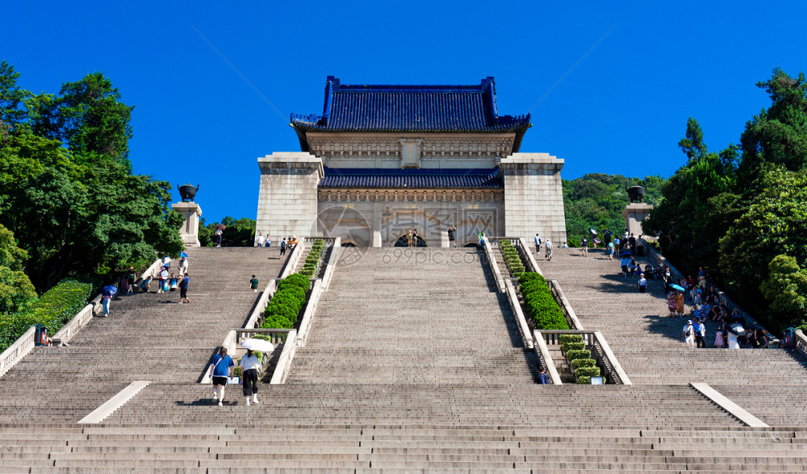
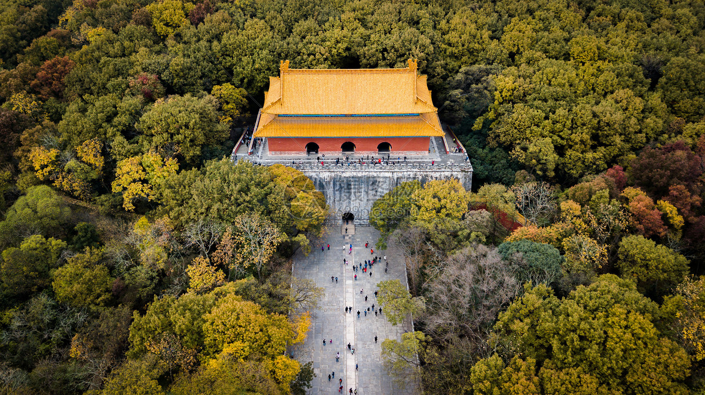
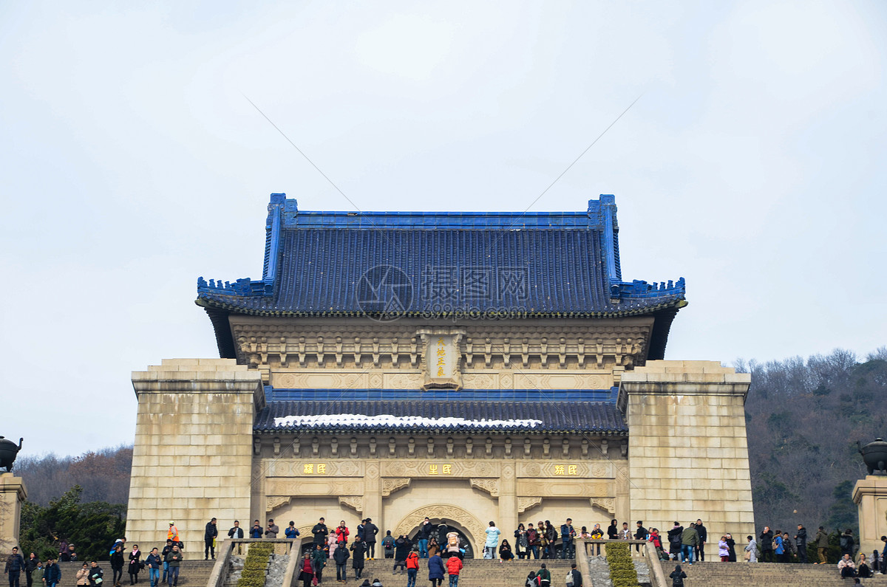
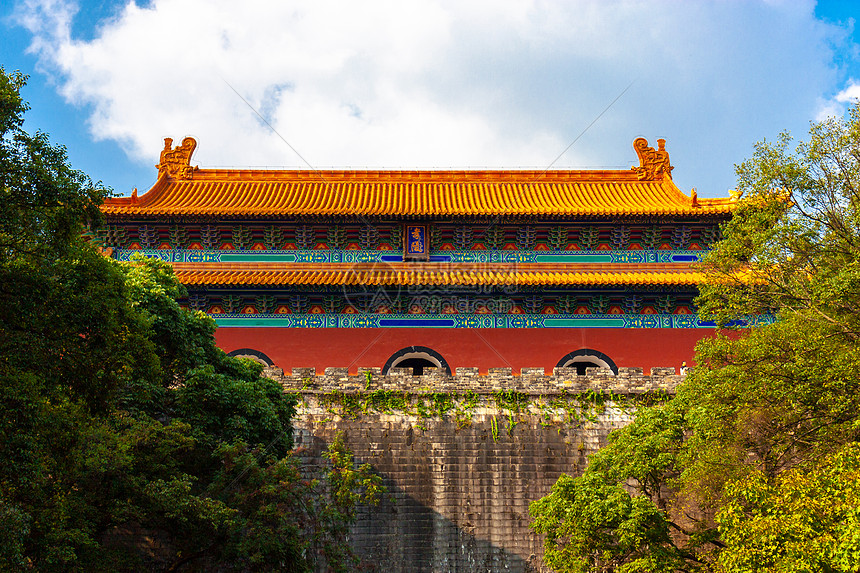
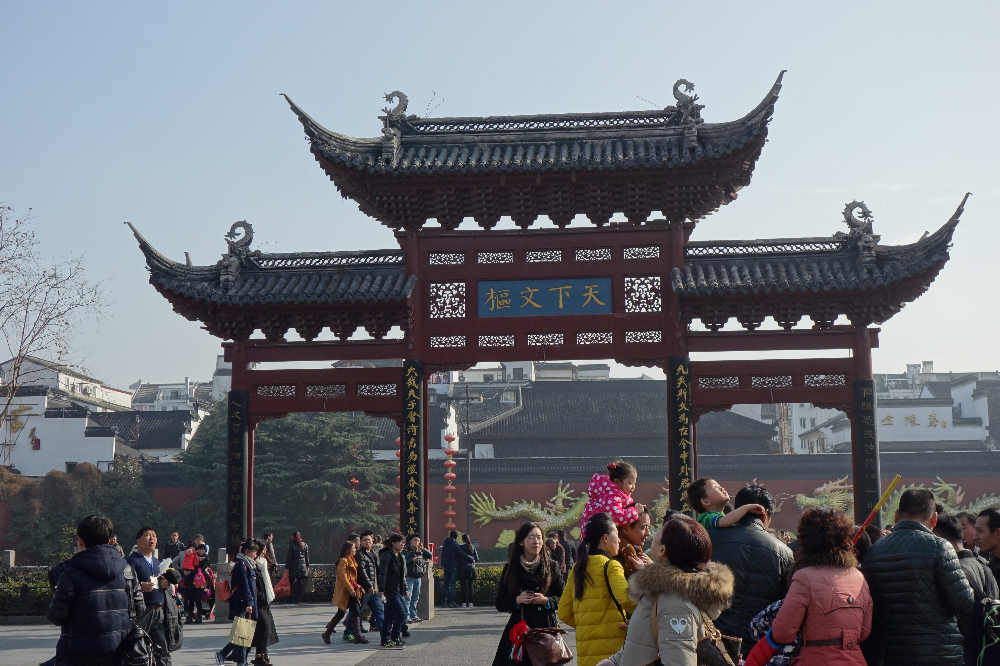
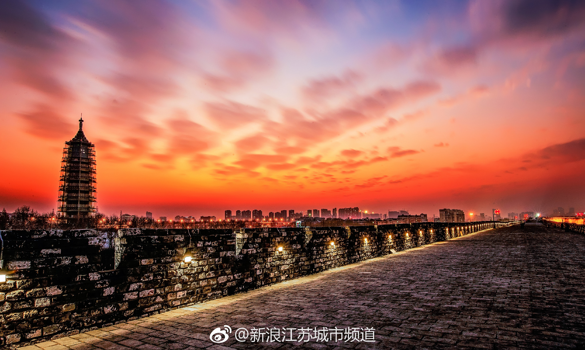
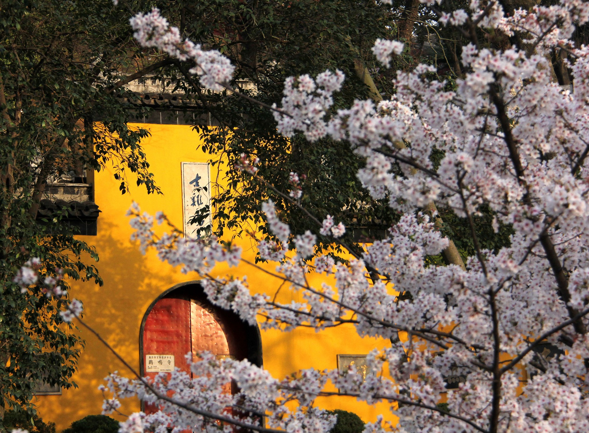
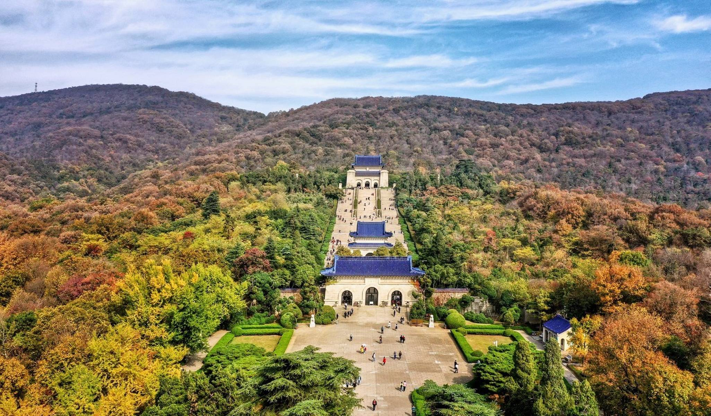
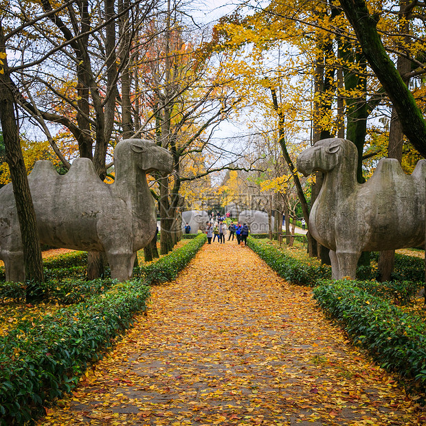
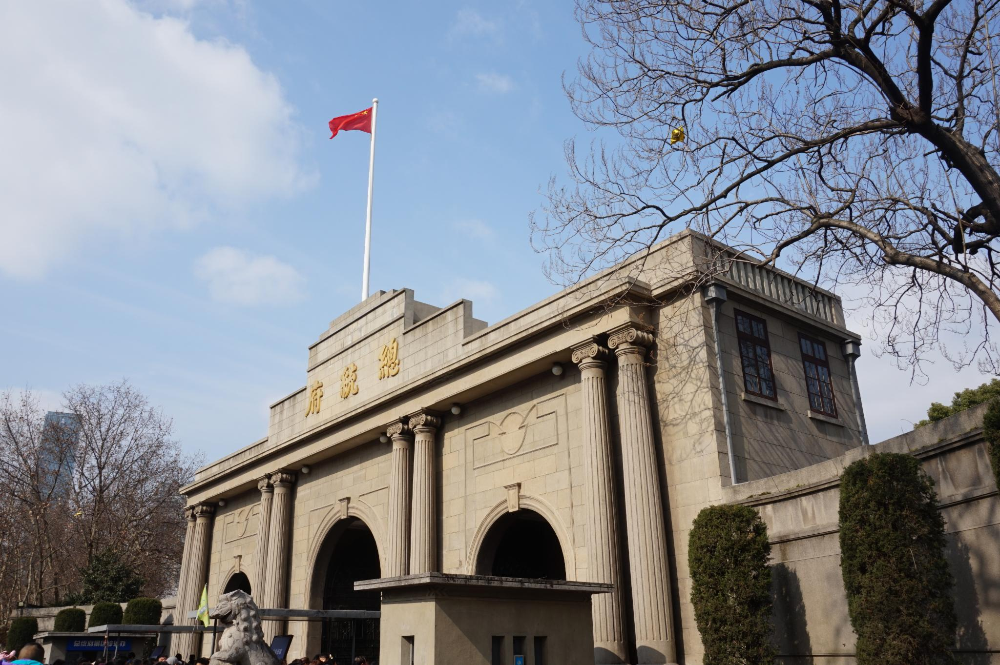

NANJING · 3 DAYS
南京三日游
从钟山松涛到秦淮灯影，用三天读懂一座城。
DAY 1 钟山怀古
DAY 2 秦淮入夜
DAY 3 湖山收尾
实拍 · 中山陵祭堂
ITINERARY
三日行程总览
一条从东到南、由山入水的动线，日均步行约 1.5 万步。

实拍 · 明孝陵方城明楼
DAY 1
钟山怀古
中山陵 · 明孝陵
08:30 出发，地铁 2 号线苜蓿园站换乘观光车
DAY 2
秦淮入夜
夫子庙 · 秦淮河
午后进城，逛到亮灯再登画舫
DAY 3
湖山收尾
玄武湖 · 紫金山
环湖慢行，登顶俯瞰金陵城
南京三日游 · 2026 旅行提案
02 / 12

DAY 01 / 钟山风景区
实拍 · 中山陵祭堂
DAY 01 / 钟山风景区
Day 1 · 中山陵
392 级台阶之上，是南京最庄严的天际线。
为什么去
近代建筑典范
吕彦直设计的“自由钟”平面，蓝瓦白墙，依山而建，气势层层递进。
建议动线
博爱坊 → 陵门 → 祭堂
沿中轴线缓步上行，登顶后回望，整座南京城尽收眼底。
实用信息
免费 · 需预约
开放 8:30–17:00，周一陵寝闭馆；地铁 2 号线苜蓿园站转观光车。
392
级台阶
1926
年始建
免费
需预约
南京三日游 · 2026 旅行提案
03 / 12

实拍 · 明孝陵方城明楼
DAY 01 / 世界文化遗产
Day 1 · 明孝陵
朱元璋与马皇后的合葬陵，一条 600 米神道走过四季。
看点
石象路神道
狮、獬豸、骆驼、象、麒麟、马六种石兽夹道，秋日乌桕如火。
动线
大金门 → 石象路 → 方城
从 5 号门进，先走神道再看方城明楼，全程约 2 小时。
实用信息
门票 70 元
开放 6:30–18:00；与中山陵同属钟山风景区，可乘观光车串联。
600
年历史
70
元门票
2
小时游览
南京三日游 · 2026 旅行提案
04 / 12

DAY 02 / 秦淮风光带
Day 2 · 夫子庙
天下文枢牌坊之下，市井与文脉只隔一条街。
实拍 · 夫子庙“天下文枢”牌坊
01 逛什么
江南贡院与乌衣巷
中国科举博物馆藏千年科考史，转身就是“旧时王谢堂前燕”。
02 吃什么
秦淮八绝
鸭血粉丝汤、牛肉锅贴、赤豆元宵，沿贡院街一路吃过去。
03 怎么走
地铁 3 号线夫子庙站
下午四点后进场，逛到天黑正好接上画舫夜游。
南京三日游 · 2026 旅行提案
05 / 12

DAY 02 / 夜航
Day 2 · 秦淮河夜游
桨声灯影里的秦淮河，是南京最柔软的一夜。
航线
东五华里水上游
夫子庙泮池码头登船，经白鹭洲、东水关，往返约 50 分钟。
时间
18:30–21:30
日落后半小时最美，灯影与水面叠在一起，建议提前取票。
票价
约 100 元 / 人
画舫夜游单独计费；旺季排队久，可先在官方渠道预约。
50
分钟航程
100
元 / 人
21:30
末班
实拍 · 夫子庙秦淮河
南京三日游 · 2026 旅行提案
06 / 12

实拍 · 鸡鸣寺（玄武湖南岸）
DAY 03 / 城市绿肺
Day 3 · 玄武湖
五洲连堤，十公里环湖路，把城墙与紫金山收进同一帧。
环湖
五洲串联
菱洲、梁洲、翠洲、环洲、樱洲以堤相连，步行或骑行皆宜。
最佳时段
清晨与日落
清晨看本地人晨练，傍晚在台城段拍城墙与紫峰大厦同框。
实用信息
免费开放
6:00–22:00；地铁 1 号线玄武门站直达，湖畔有观光车。
10
公里环湖
5
座洲岛
免费
开放
注：素材库中“玄武湖”实拍图实为鸡鸣寺（玄武湖南岸），页面已如实标注。
南京三日游 · 2026 旅行提案
07 / 12

实拍 · 紫金山南麓中山陵
DAY 03 / 登高
Day 3 · 紫金山
南京的屋脊在城东，海拔 448.9 米，一半森林一半历史。
路线 A
蒋王庙 → 头陀岭
经典登山道，约 1.5 小时登顶，坡度适中，沿途林荫。
路线 B
索道直达
往返约 100 元，8 分钟到山顶，适合时间紧或带老人小孩。
顺路
音乐台与美龄宫
下山可串联音乐台喂鸽子、美龄宫“项链”梧桐，秋色最佳。
南京三日游 · 2026 旅行提案
08 / 12
NANJING BITES
金陵味道 · 必吃清单
一只鸭子、一碗汤、一笼包，南京人的一天从热气里开始。
盐水鸭
40–60 元 / 份
皮白肉嫩，桂花时节最香
鸭血粉丝汤
20–30 元 / 碗
鸭血滑嫩，汤底清鲜
鸡鸣汤包
20–30 元 / 笼
皮薄汁多，先咬小口
梅花糕
8–12 元 / 个
豆沙馅，趁热吃

实拍 · 明孝陵秋色
不时不食，金陵有味。
南京三日游 · 2026 旅行提案
09 / 12

BUDGET / 3 DAYS
预算与花费
两人出行为例，人均按舒适型估算，不含往返大交通。
1,380
元 / 人
两人同行 · 舒适型 · 三天两晚
旺季酒店上浮约 30%，建议提前两周预订。
住宿
800 元
商圈 2 晚中档酒店
餐饮
300 元
含夜游茶点
门票
150 元
明孝陵 70 + 夜游 100
市内交通
80 元
地铁 + 观光车
其他
50 元
饮水与纪念品
预算为估算值，实际以当日票价与酒店价格为准。
南京三日游 · 2026 旅行提案
10 / 12
实拍 · 南京总统府
BEFORE YOU GO
出行注意事项
六件小事，决定这趟旅程顺不顺。
01
中山陵、南京博物院需提前 1–7 天实名预约，周一多馆闭馆。
02
钟山景区很大，穿舒适鞋；观光车 10 元 / 次，能省不少脚力。
03
秦淮河画舫分日游与夜游，认准官方码头，勿信路边拉客。
04
南京地铁覆盖主要景点，交通卡或手机 NFC 最方便。
05
春秋早晚温差大，登紫金山备一件防风外套。
06
文明参观，陵寝区域保持安静；无人机需提前报备。
南京三日游 · 2026 旅行提案
11 / 12
THANKS FOR WATCHING
金陵一梦，后会有期
一座金陵城，半部中国史。
三天太短，把未走完的路，留给下一次。
南京三日游 · 2026
实拍 · 明孝陵方城明楼